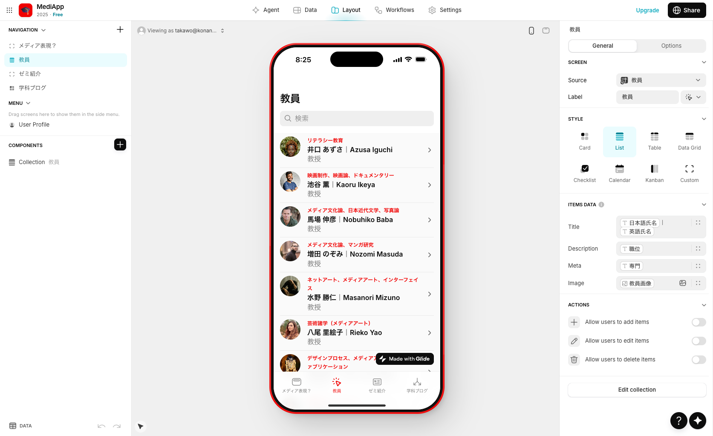
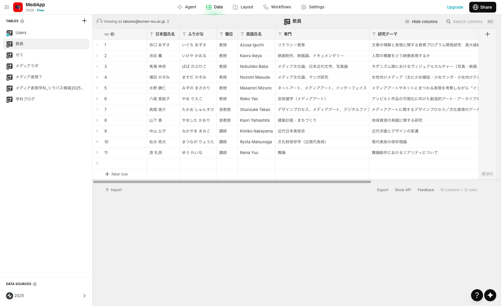

授業について


このWebページでは、授業「フィジカルコンピューティングB」の課題として制作された、ノーコードアプリ開発プラットフォーム「Glide」を使用したスマートフォンアプリの紹介をしています。本授業では、データベース駆動型開発を中心とした開発手法を学びます。Glideでは、スプレッドシート形式のデータベースを構築し、そのデータに基づいてアプリの画面や機能を自動生成します。データの構造を設計し、適切に整理することで、効率的にアプリケーションを開発でき、データベースの設計がアプリの品質を左右するため、データモデリングの重要性を実践的に学びます。特に重要なのは、ユーザーのニーズを理解し、それをデータ構造とUIデザインに落とし込む思考プロセスです。アイディエーションの段階では、ブレインストーミングで自由にアイデアを発想し、機能を選別し優先順位をつけることで、ユーザビリティやアクセシビリティを考慮した設計を学びます。